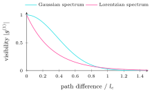

and coherence length measure how long a wave stays in phase; fringe visibility in an interferometer equals , the Fourier transform of the normalised spectrum (Wiener–Khinchin); spatial coherence across a source of angular size
and coherence length measure how long a wave stays in phase; fringe visibility in an interferometer equals , the Fourier transform of the normalised spectrum (Wiener–Khinchin); spatial coherence across a source of angular size  extends over
extends over  .
.Definition
. Wiener–Khinchin: and are a Fourier pair, so . Lorentzian line: , .
Coherence length (derivation)
. Interference fringes are visible when the path difference .
| source | Δλ or Δν | l_c |
|---|---|---|
| white light | ≈ 300 nm | ≈ 1 µm |
| LED, 850 nm | 40 nm | ≈ 18 µm |
| Fabry–Perot laser diode | ≈ 1 nm (multimode) | ≈ 2 mm |
| DFB laser, 1550 nm | 1 MHz | ≈ 300 m |
| stabilised HeNe | ≈ 1 kHz | ≈ 300 km |
Spatial coherence
A source of size  at distance
at distance  (angle ) gives coherent illumination over a transverse distance (van Cittert–Zernike: the coherence function is the Fourier transform of the source intensity) (Zernike 1938). The Sun ( mrad) is spatially coherent over ~60 µm at 550 nm — Young's double slit with sunlight needs a pinhole.
(angle ) gives coherent illumination over a transverse distance (van Cittert–Zernike: the coherence function is the Fourier transform of the source intensity) (Zernike 1938). The Sun ( mrad) is spatially coherent over ~60 µm at 550 nm — Young's double slit with sunlight needs a pinhole.
Worked example
Optical coherence tomography with an SLED at 1310 nm, nm: axial resolution µm µm in air. Low coherence is the feature that gives depth resolution.
Picture: fringe visibility versus path difference

Here : fringes fade over about one coherence length, faster for the Lorentzian line (long tails in frequency mean a sharp peak in time).
Engineering applications
OCT imaging, coherent optical communications (laser linewidth limits phase noise), LiDAR (FMCW needs longer than twice the range), speckle (high coherence) vs speckle-free LED illumination, holography.
Exam-style exercise
A Michelson interferometer is lit (a) by a 1550 nm LED with nm, (b) by a DFB laser of linewidth 10 MHz. Coherence lengths? For (a), the visibility at 20 µm path difference (Gaussian spectrum)? (c) Over what width is sunlight (angular diameter 0.53°, µm) spatially coherent?
Solution
(a) µm. (b) m. Visibility for (a): , . (c) µm mrad µm: Young's slits in sunlight must be closer than ≈ 0.06 mm. LEDs give the short coherence used by OCT (axial resolution ≈ ).
Pitfall
Coherence is not monochromaticity alone: a laser with a stable linewidth can still be spatially multimode (poor spatial coherence), and an LED filtered narrowly becomes temporally coherent but stays thermal in its statistics (g2).